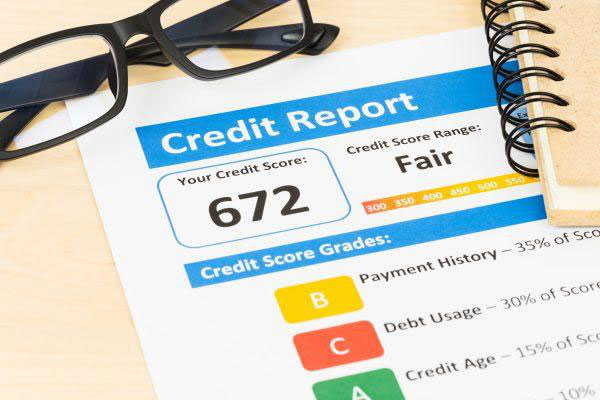

A consumer’s credit score is lowered by the past financial blunders and lending choices. Credit
bureaus keep record of these negative items so that can determine your financial reliability and
the likelihood of debt repayment.
Negatives items usually stay for a maximum of 7 years on your credit profile whereas
bankruptcies stay for 10 years. Hard inquiries tend to stay for two years and some types of
student loans can stay forever.
Negative items on your credit profile are not a good thing but there are ways in which you can
make your situation better. Listed below are the negative items that can impact your credit
profile and the ways in which you can remove these items from your profile.
Hard Inquiries: Two Years
Hard inquiries usually remain a part of your credit profile for two years. It is very difficult
to avoid these because they usually occur when lenders will run your credit for mortgage, credit
cards, car loans and other loan applications. You can minimize hard inquiries by doing your due
research beforehand and you should apply to one lender at a time instead of multiple
applications.
When looking for a credit card, try to research for the best credit card that is suited for your
needs. Only apply if you are sure that you will qualify.There is an upside though, when you are comparing rates between different lenders within a
specific timeframe, multiple inquiries will be counted as one. This timeframe ranges between 14
and 45 days depending on the model of credit scoring that is used.
Late Payments, Collection Accounts and More: Seven Years
Following items might stay on the record for up to 7 years.
- Late payments
- Collection accounts
- Filing for chapter 7 bankruptcy
- Charge offs
- Student loan default
- Closed delinquent accounts
Some of the negative items impact your credit profile more badly than the others. For example,
older negative items such as late payments can be remedied by years of exceptional and timely
repayment. If you have a lot of negative items on your credit profile that are 6 year old but since
then you have made timely payments, you can have a great credit score. Your past can be
remedied by your present. In such a case, lenders will be more inclined to offer you a loan.
Repairing your credit can minimize or even eliminate the impact of these things. Something’s
might even be wrongly added to your profile. A lender might not be able to substantiate your
account. Look at the example of charge offs. A creditor is bound to show things such as your
current balance, your payment history and the initial agreement between you and the lender in
case a collection agency is involved. If all of these standards are not met and verified you are
entitled to the removal of charge offs from your credit profile.
Chapter 7 Bankruptcy: 10 Years
If you have filed for a chapter 7 bankruptcy, it can stay on your profile for 10 years. Though
most of the individual cases linked with bankruptcy (let’s say a delinquent car loan) will most
probably disappear from your profile in 7 years. Credit repair process makes sure that the facts
regarding the bankruptcy are reported properly and all the accounts associated with it are treated
accordingly.
Unpaid Perkins Federal Student Loans: Forever
These loans might never get removed from your credit profile. The reason behind this is the fact
that the money you have borrowed came from the government. Additionally, you can’t get rid of
these loans even by declaring bankruptcy. If you have a private unpaid loan, it might be
eliminated after 7 years.
To Sum it Up
The information sent by the creditors to the credit bureaus is not always accurate and can be
associated with the wrong accounts. Our credit repair service can help you separate fact from fiction so you can get the most realistic picture about your credit. To learn more, please consult
the FAQ section.